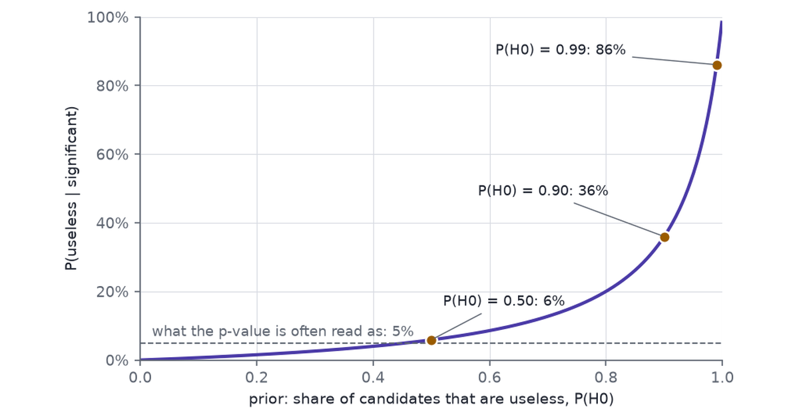
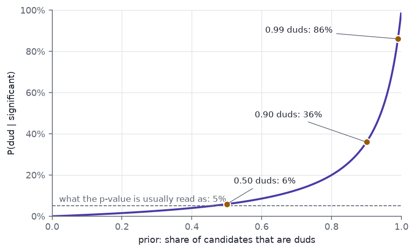
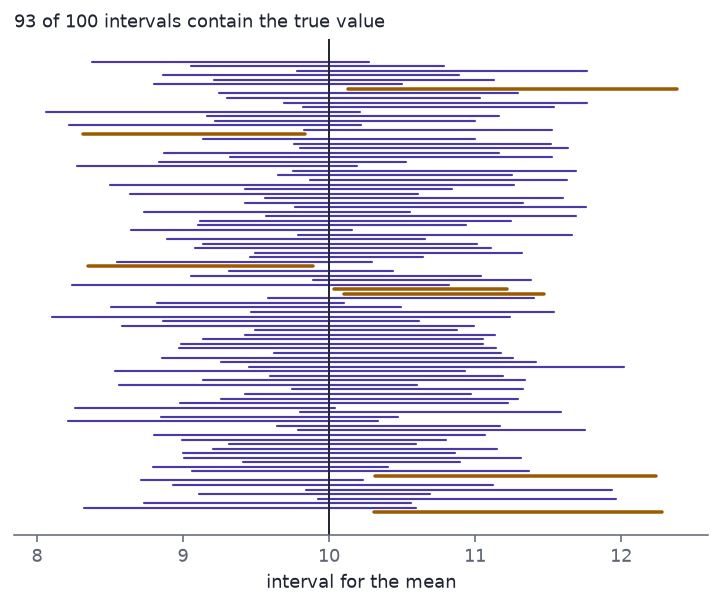
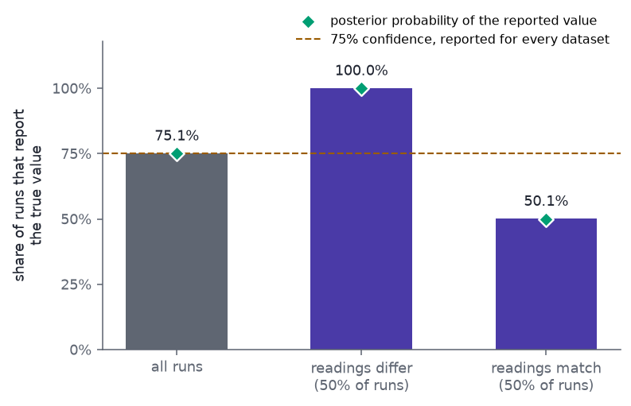

A p-value and a confidence interval answer the question turned around, and only a prior turns it back
Every Pope is Catholic, and almost no Catholic is the Pope. P-values and confidence intervals make the same flip: they give the probability of the data given a hypothesis, while people want the probability of the hypothesis given the data. Bayes’ theorem built from the Pope up, a drug screen where 36% of significant drugs are duds, a valid 75% confidence procedure that is always either certainly right or a coin flip, and a 95% interval for a mass that lies entirely below zero. In each case the missing ingredient is the prior.
Statistics
Bayesian
Author
Ravi Kalia
Published
November 23, 2026

Pope Given Catholic
A p-value or a confidence interval gives the probability of the data given a hypothesis. People want the probability of the hypothesis given the data, and the only road from one to the other is Bayes’ theorem, which needs a prior.
Start with something nobody gets wrong. Every Pope is Catholic: the probability that someone is Catholic, given that they are the Pope, is 1. Is a random Catholic therefore likely to be the Pope? Obviously not. There is one Pope and about 1.4 billion Catholics, so the chance is about 1 in 1.4 billion. Same two words, opposite order, a billion-fold gap.
Nobody makes this mistake with Popes. Almost everybody makes it with p-values. Richard McElreath points this out in the first chapter of Statistical Rethinking: scientists routinely read a p-value as the probability that their hypothesis is true, and a confidence interval as the range where the parameter probably lies. The reverse mistake almost never happens. By the end, “that’s Pope given Catholic” should be a test you can run on any statistical claim.
Turning a condition around changes the question
“The probability of A given B”, written \(P(A \mid B)\), means: keep only the cases where B is true, and ask what fraction of them are also A. For people, that is counting:
\[
P(\text{Pope} \mid \text{Catholic}) = \frac{\text{people who are Pope and Catholic}}{\text{Catholics}}.
\]
Turn the condition around and the denominator changes: \(P(\text{Catholic} \mid \text{Pope})\) divides the same one person by the number of Popes, also one.
The chance that A and B are both true can be built two ways, starting from either side:
\[
P(A \text{ and } B) = P(A \mid B)\,P(B) = P(B \mid A)\,P(A).
\]
So one conditional can be rewritten as the other. But only if you also know \(P(A)\) and \(P(B)\), which neither conditional contains.
The denominator counts every way to be Catholic
\(P(B)\), the overall chance of the evidence, is built by splitting the world into cases that do not overlap and together cover everyone, then adding up how often B happens in each. This is the law of total probability:
For the Pope: being Catholic is certain for the one person who is Pope, and has its ordinary frequency for everyone else. The sum is every route to the evidence.
Bayes’ theorem is those two facts in one line
Divide the two-way factorisation by \(P(B)\) and expand \(P(B)\) by total probability:
The UN puts the world’s population at 8.2 billion in 2024, and the Vatican counts just over 1.422 billion baptised Catholics. So a random person is the Pope with chance 1 in 8.2 billion, and Catholic with chance 17.3%.
The conditional we started with, \(P(\text{Catholic} \mid \text{Pope}) = 1\), contributed a factor of one. The answer came from two numbers it does not contain: how rare Popes are and how common Catholics are. Those base rates are the prior, and the flipped probability is the posterior. Nobody calls the prior subjective here. Without it, there is no answer.
A p-value is Catholic given Pope
A hypothesis test starts from a null hypothesis, \(H_0\): here, “this drug is a dud”. The p-value is the probability, if \(H_0\) were true, of data at least as extreme as yours. Below 0.05, the result is significant. So the 5% is a statement about \(P(\text{significant} \mid \text{dud})\). The question you care about is \(P(\text{dud} \mid \text{significant})\).
Follow one drug screen. The lab is synthetic, but its shape is typical of any search through many candidates where most do nothing.
Code
N_DRUGS, N_WORK =1000, 100ALPHA, POWER =0.05, 0.80# P(significant | dud) and P(significant | works)n_duds = N_DRUGS - N_WORKfalse_alarms =round(ALPHA * n_duds)true_hits =round(POWER * N_WORK)missed = N_WORK - true_hitsquiet = n_duds - false_alarmsn_sig = false_alarms + true_hitsshare_duds = false_alarms / n_sigdef p_dud_given_sig(prior_dud, alpha=ALPHA, power=POWER):"""Bayes' theorem with the total-probability denominator written out."""return alpha * prior_dud / (alpha * prior_dud + power * (1- prior_dud))assert np.isclose(p_dud_given_sig(n_duds / N_DRUGS), share_duds)# The figure's alt text quotes these counts.assert (N_DRUGS, N_WORK, true_hits, missed, false_alarms, quiet, n_sig) == (1000, 100, 80, 20, 45, 855, 125)
The lab tests 1,000 candidate drugs. 100 work; 900 are duds.
A dud passes the test 5% of the time. That is the p-value threshold: 45 false alarms.
A working drug passes 80% of the time, the test’s power: 80 real hits.
So 125 drugs come out significant, and 45 of them are duds.
The 0.90 in that formula is the prior: the share of duds going in. Keep the test fixed and change only that.
Code
PRIORS = [0.50, 0.90, 0.99]POST = {p: p_dud_given_sig(p) for p in PRIORS}assert [pct(v) for v in POST.values()] == ["6%", "36%", "86%"] # quoted in the alt textgrid = np.linspace(0, 0.999, 600)fig, ax = plt.subplots(figsize=(6.4, 3.8))ax.plot(grid, p_dud_given_sig(grid), color=PURPLE, lw=2)ax.axhline(ALPHA, color=MUTED, ls="--", lw=0.9)ax.text(0.02, ALPHA +0.02, "what the p-value is usually read as: 5%", color=MUTED, fontsize=8.5)for p, (dx, dy) inzip(PRIORS, [(0.02, 0.10), (-0.32, 0.12), (-0.38, 0.03)]): ax.scatter(p, POST[p], s=48, color=AMBER, edgecolor="white", lw=1.2, zorder=3) ax.annotate(f"{p:.2f} duds: {pct(POST[p])}", (p, POST[p]), (p + dx, POST[p] + dy), color=INK, fontsize=8.5, arrowprops=dict(arrowstyle="-", color=MUTED, lw=0.7))ax.set_xlabel("prior: share of candidates that are duds")ax.set_ylabel("P(dud | significant)")ax.set_xlim(0, 1)ax.set_ylim(0, 1)ax.yaxis.set_major_formatter(plt.FuncFormatter(lambda v, _: f"{v:.0%}"))ax.grid(color=RULE, lw=0.5)fig.savefig("figures/prior-curve.png", dpi=150, bbox_inches="tight")plt.show()

Figure 2: The chance that a significant drug is a dud, against the share of duds going in. The test is the same everywhere on the curve. The dashed line is the 5% a p-value is usually taken to mean.
Half duds: 6%. Nine in ten: 36%. Ninety-nine in a hundred, a long-shot field: 86%. Same test, same threshold, wildly different answers.
That is the Pope, letter for letter. The hypothesis is the Pope; the data are the Catholic. The p-value is Catholic given Pope: if the drug is a dud, how often does a result like this appear? You wanted Pope given Catholic: given this result, how likely is a dud? Only the base rate gets you there. (A real p-value is a tail probability, “at least this extreme”, not a yes-or-no “significant”. The direction of the conditioning is the same.)
A confidence interval is Catholic given Pope too
A 95% confidence interval comes from a recipe: run it on sample after sample from one fixed true value \(\mu\), and 95% of the intervals it makes contain \(\mu\). The guarantee is \(P(\text{interval covers } \mu \mid \mu) = 0.95\). The parameter is fixed; the interval is what is random. Once your interval is computed, nothing random is left. It contains \(\mu\) or it does not.
Code
MU, SIGMA, N =10.0, 2.0, 20rng = np.random.default_rng(SEED)T = stats.t.ppf(0.975, N -1)def t_intervals(n_rep): x = rng.normal(MU, SIGMA, (n_rep, N)) m, se = x.mean(1), x.std(1, ddof=1) / np.sqrt(N)return m - T * se, m + T * selo, hi = t_intervals(100)covers = (lo <= MU) & (MU <= hi)lo_big, hi_big = t_intervals(200_000)long_run = ((lo_big <= MU) & (MU <= hi_big)).mean()assert (MU, N) == (10.0, 20) # quoted in the caption
Code
fig, ax = plt.subplots(figsize=(6.4, 4.6))for k inrange(100): ax.plot([lo[k], hi[k]], [k, k], color=PURPLE if covers[k] else AMBER, lw=1.1if covers[k] else1.8, solid_capstyle="round")ax.axvline(MU, color=INK, lw=1)ax.set_yticks([])ax.spines["left"].set_visible(False)ax.set_xlabel("interval for the mean")ax.set_title(f"{covers.sum()} of 100 intervals contain the true value", loc="left", color=INK)plt.show()

Figure 3: One hundred 95% confidence intervals, each from a fresh synthetic sample of 20 measurements of a quantity whose true value is 10 (vertical line). Amber intervals miss it. The 95% belongs to the recipe, not to any one interval.
np.int64(93) of these 100 cover the truth; over 200,000 runs, 95.0%. The 95% describes the pile. You hold one interval, with the vertical line erased. That sounds like hair-splitting until the data tell you which kind of interval you are holding.
A 75% procedure that is never 75% right
A gauge is stuck: every reading is the true value plus 1 or minus 1, fifty-fifty, independently. Take two readings. If they differ, report their midpoint. If they match, report the reading minus 1. (This is Example 1 in Berger and Wolpert’s The Likelihood Principle; the gauge is our costume for it.)
Code
THETA =3# the true value; the rule's behaviour does not depend on itdef report(x1, x2):return (x1 + x2) /2if x1 != x2 else x1 -1def posterior(x1, x2):"""Posterior over theta under a flat prior: every candidate starts equal.""" cands =sorted({x1 -1, x1 +1, x2 -1, x2 +1}) like = np.array([0.25ifabs(x1 - c) ==1andabs(x2 - c) ==1else0.0for c in cands])returndict(zip(cands, like / like.sum()))rows = []for e1 in (-1, 1):for e2 in (-1, 1): x1, x2 = THETA + e1, THETA + e2 est = report(x1, x2) rows.append({"readings": f"{x1}, {x2}", "chance": "1/4","rule reports": f"{est:g}", "right?": "yes"if est == THETA else"no","what you can know": "certain"if x1 != x2 else"coin flip"})FOUR = pd.DataFrame(rows)exact_coverage = np.mean([r["right?"] =="yes"for r in rows])POST_DIFF = posterior(THETA -1, THETA +1)[THETA] # readings differPOST_SAME = posterior(THETA +1, THETA +1)[THETA] # readings matchassert (THETA, exact_coverage, POST_DIFF, POST_SAME) == (3, 0.75, 1.0, 0.5) # heading, captions, alt textREPS =200_000g = np.random.default_rng(SEED +1)X = THETA + g.choice([-1, 1], size=(REPS, 2))differ = X[:, 0] != X[:, 1]est = np.where(differ, X.mean(1), X[:, 0] -1)hit = est == THETAcov_all, cov_diff, cov_same = hit.mean(), hit[differ].mean(), hit[~differ].mean()share_diff = differ.mean()post_on_est = np.where(differ, POST_DIFF, POST_SAME) # what the posterior says, run by runassertabs(cov_all -0.75) <0.01and cov_diff ==1.0andabs(cov_same -0.5) <0.01
With a true value of 3, there are four equally likely outcomes:
Code
md(FOUR)
Table 1: Every possible pair of readings when the true value is 3.
readings
chance
rule reports
right?
what you can know
2, 2
1/4
1
no
coin flip
2, 4
1/4
3
yes
certain
4, 2
1/4
3
yes
certain
4, 4
1/4
3
yes
coin flip
The rule is right in three of four: a valid 75% confidence procedure, whatever the true value.
Now look at your readings. If they differ, the truth sits exactly between them. You are certain. If they match, the truth is one above or one below, and you are guessing. You are never 75% sure. You are 100% sure or 50% sure, and the readings tell you which. The 75% is an average over datasets you did not get.
Code
labels = ["all runs", f"readings differ\n({pct(share_diff)} of runs)",f"readings match\n({pct(1- share_diff)} of runs)"]rates = [cov_all, cov_diff, cov_same]said = [post_on_est.mean(), POST_DIFF, POST_SAME]fig, ax = plt.subplots(figsize=(6.0, 3.6))ax.bar(range(3), rates, width=0.55, color=[MUTED, PURPLE, PURPLE])for k, r inenumerate(rates): ax.text(k, r +0.05, pct(r, 1), ha="center", color=INK, fontsize=9)ax.scatter(range(3), said, marker="D", s=46, color=GREEN, edgecolor="white", lw=1.2, zorder=3, label="posterior probability of the reported value")ax.axhline(0.75, color=AMBER, ls="--", lw=1.1, label="75% confidence, reported for every dataset")ax.set_xticks(range(3), labels)ax.set_ylim(0, 1.18)ax.set_yticks([0, 0.25, 0.5, 0.75, 1.0])ax.yaxis.set_major_formatter(plt.FuncFormatter(lambda v, _: f"{v:.0%}"))ax.set_ylabel("share of runs that report\nthe true value")ax.legend(loc="upper right", fontsize=8, bbox_to_anchor=(1.0, 1.12))plt.show()

Figure 4: The two-reading rule run 200,000 times. Bars: how often it reports the true value, overall and split by whether the readings differed or matched. Dashed line: the 75% the confidence statement reports for every dataset. Green diamonds: what the flat-prior posterior reports, which matches each group’s hit rate.
Simulated: right 75.1% overall, 100.0% when the readings differ, 50.1% when they match. A Bayesian posterior with a flat prior over the true value says exactly what you can know: 100% on the midpoint, or 50% on each candidate. The confidence statement answered “how often does this rule work?” That is Catholic given Pope. You asked “what is the true value, given my readings?” That is Pope given Catholic.
A valid 95% interval can be certainly wrong
The gauge’s confidence level misdescribes the data. Prior knowledge can expose something starker: an interval that is certainly wrong.
Code
SD, Z =0.1, stats.norm.ppf(0.975) # balance noise (mg) and the 95% multiplierREADING =-0.3# one unlucky readingci = (READING - Z * SD, READING + Z * SD)# Prior: any positive mass equally plausible, negative masses impossible.post = stats.truncnorm(a=(0- READING) / SD, b=np.inf, loc=READING, scale=SD)cred_hi = post.ppf(0.95) # density falls from zero, so the 95% interval is [0, cred_hi]TRUE_MASS =0.05w = np.random.default_rng(SEED +2).normal(TRUE_MASS, SD, 200_000)mass_cov = ((w - Z * SD <= TRUE_MASS) & (TRUE_MASS <= w + Z * SD)).mean()all_negative = (w + Z * SD <0).mean()
Weigh a 0.05 mg sample on a balance with noise of 0.1 mg. An unlucky reading of -0.3 mg gives the 95% interval -0.50 to -0.10 mg. Every value in it is impossible. The recipe is still valid: over 200,000 simulated weighings it covers the truth 95.0% of the time, while 0.7% of its intervals lie entirely below zero. A prior that knows mass is positive cannot make this mistake. Its credible interval, a range that holds the mass with 95% probability given the data and the prior, runs from 0 to 0.08 mg.
The prior is the missing ingredient every time
Every example has one shape. We have a probability with the hypothesis fixed. We want one with the data fixed.
Code
md(pd.DataFrame({"example": ["Pope", "drug screen", "stuck gauge", "negative mass"],"what we have": [r"$P(\text{Catholic} \mid \text{Pope}) = 1$",r"$P(\text{sig} \mid \text{dud}) = "+f"{ALPHA}$",f"rule is right {pct(exact_coverage)} of the time, for any "+r"$\theta$","95% of intervals cover the mass, for any mass", ],"what we want": [r"$P(\text{Pope} \mid \text{Catholic})$"+f": 1 in {ONE_IN} billion",r"$P(\text{dud} \mid \text{sig})$"+f": {pct(POST[0.5])}, {pct(POST[0.9])} or {pct(POST[0.99])}",r"$P(\theta = \text{report} \mid \text{readings})$"+f": {pct(POST_DIFF)} or {pct(POST_SAME)}",f"where the mass is, given a reading of {READING:g} mg", ],"missing ingredient": ["prior: how rare Popes are","prior: the share of duds",r"prior over $\theta$ (flat)","prior: mass is positive", ],}))
Table 2: What each example hands us, what we want, and what it takes to get there.
example
what we have
what we want
missing ingredient
Pope
\(P(\text{Catholic} \mid \text{Pope}) = 1\)
\(P(\text{Pope} \mid \text{Catholic})\): 1 in 1.42 billion
prior: how rare Popes are
drug screen
\(P(\text{sig} \mid \text{dud}) = 0.05\)
\(P(\text{dud} \mid \text{sig})\): 6%, 36% or 86%
prior: the share of duds
stuck gauge
rule is right 75% of the time, for any \(\theta\)
\(P(\theta = \text{report} \mid \text{readings})\): 100% or 50%
prior over \(\theta\) (flat)
negative mass
95% of intervals cover the mass, for any mass
where the mass is, given a reading of -0.3 mg
prior: mass is positive
None of the mathematics is contested. Every statistician accepts Bayes’ theorem, and when the prior is a frequency, like a lab’s track record, frequentists use it too: the share of false discoveries is their own quantity. The split comes when the hypothesis is one fixed fact. A Bayesian will put a probability on it. A frequentist will not, and so can say how the procedure behaves, but not how likely this hypothesis is.
Plenty of data hides the difference
Why does the misreading usually go unpunished? With a flat prior and plenty of data, credible and confidence intervals often coincide.
Code
FAR =2.0# a reading far from the boundary at zeroci_far = (FAR - Z * SD, FAR + Z * SD)post_far = stats.truncnorm(a=(0- FAR) / SD, b=np.inf, loc=FAR, scale=SD)cred_far = (post_far.ppf(0.025), post_far.ppf(0.975))assert np.allclose(ci_far, cred_far, atol=5e-4)
On the same balance, a reading of 2 mg gives 1.804 to 2.196 mg either way. Read one as the other and you get the right numbers by luck. The luck runs out with thin data, near a boundary, or wherever the prior is lopsided, as in the drug screen.
Priors have costs. Someone has to choose one and defend it, and with thin data the answer can move with that choice. Long-run error rates have real uses: a regulator or a factory running one procedure thousands of times needs exactly that guarantee. But a scientist asking about one experiment wants to know how likely the hypothesis is, given the data. That is Pope given Catholic, and the prior is the only way there.
Berger, J. O. & Wolpert, R. L. (1988). The Likelihood Principle, 2nd ed. IMS Lecture Notes–Monograph Series, vol. 6. Institute of Mathematical Statistics. The two-reading example is Example 1, §2.1, pp. 5–6.
Morey, R. D., Hoekstra, R., Rouder, J. N., Lee, M. D. & Wagenmakers, E.-J. (2016). The fallacy of placing confidence in confidence intervals. Psychonomic Bulletin & Review 23(1), 103–123. Further reading: more confidence intervals that misdescribe the data in hand.
United Nations, Department of Economic and Social Affairs, Population Division (2024). World Population Prospects 2024. World population of 8.2 billion in 2024.